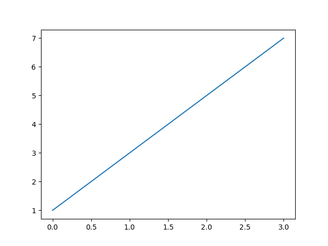

Blogging in Org Mode
This is a private post outlying how to create posts with Nikola.
A simpler way is to integrate directly is to save the ob-ipython
generated source for the rendered images and copy them in the output
directory. Then you do not have to make major changes and things will
be formatted well quickly.
How to insert pictures in Python
Prova a scrivere un poco in verbatim.
import matplotlib.pyplot as plt
plt.plot([1,3,5,7])
plt.savefig("../images/test_plot.png")
return("../images/test_plot.png")

Insert pictures directly via html

Like this you can directly center etc using html. Not sure if it works on nikola though.
Aligning text and images
Code, such as the HTML elements and text we present in the following example, will cause the text within the block to display at the top of the image:
<IMG SRC=”building.jpg” ALIGN=”top” />The first line of this text will be positioned at the top of the image. The rest will start below the image, creating a large white space. Fortunately, there is a better way to handle this that more closely resembles what you could do with a desktop publishing program.
The text flow problem in the previous paragraph isn’t as evident when you use the Right or Left value, though. Thus, the following code will position the image to the right, with the text flowing neatly on the left side:
<IMG SRC=”building.jpg” ALIGN=”right” />This text flows on the left.
Multiple images next to each other
Notice that style is CSS embedded into HTML
You can specify the css format for that box via:
In order to center the pictures
You can include at the beginning of the code this piece of code. Then magically the image width in html will start to properly work.
Insert video
Insert PDFs through Iframes
Notice that you have to create the pdfs directory in the output
directory in your blog directory. Then you have to insert the PDFs
there that you want to display.
pictures on R
#+begin_src R :exports none
# 1. Open a svg file
svg("../images/boxplot.svg")
# 2. Create a plot
boxplot (weight ~ group, data = PlantGrowth)
# 3. Close the pdf file
dev.off()
#+end_src
[[img-url:/images/boxplot.svg]]
For latex integration
Check the source code of the posts with contrasts. There are the options in the
YAML formatted comments.